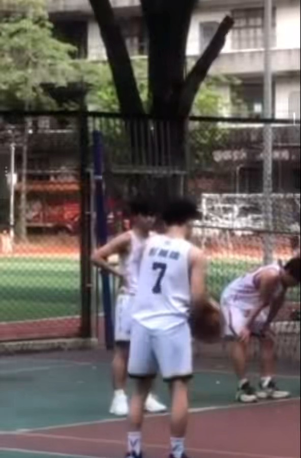
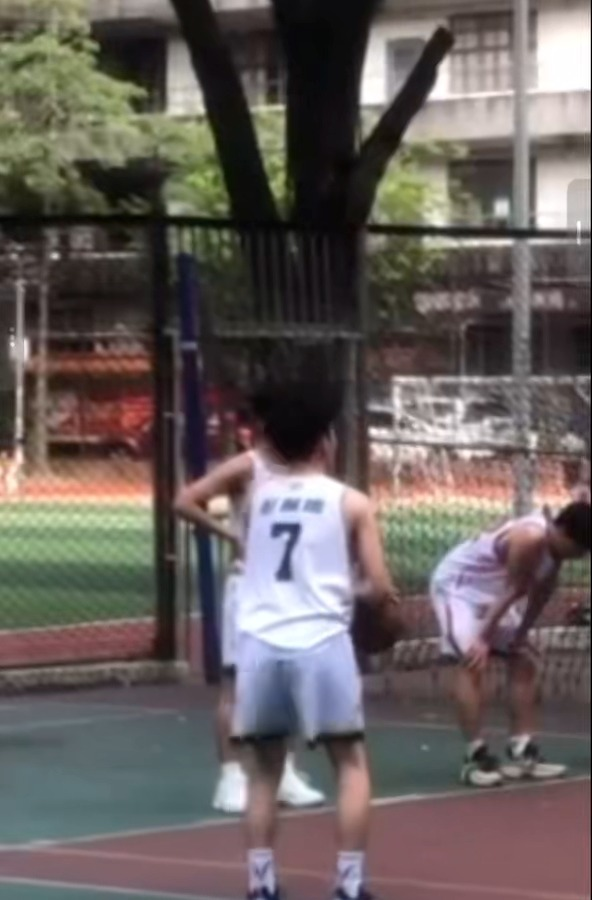
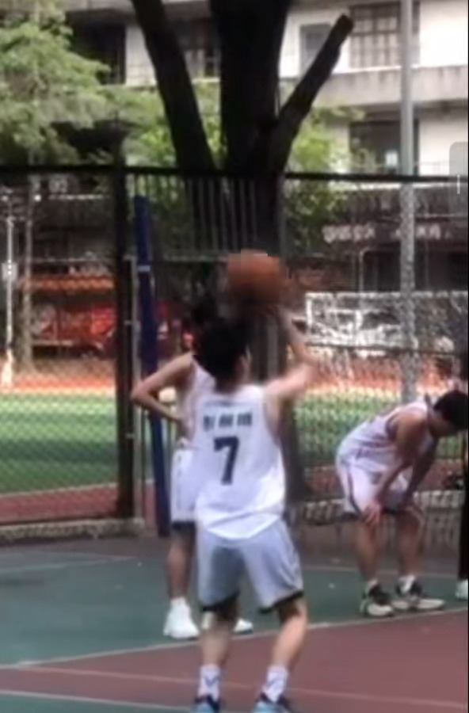
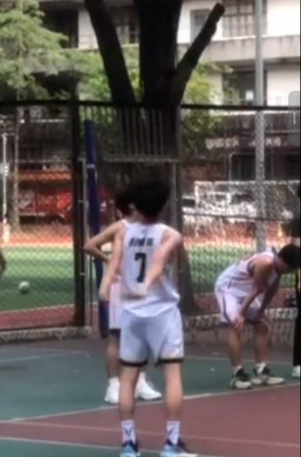

定点投篮 · 第 2 组/2026 年 11 月 15 日
上举与出手衔接连续
从屈膝到出手，球的上升过程保持连贯。
动作分型一段式投篮
71%判断置信度 · 中等
回看这次出手
完整片段 2.97 秒当前帧 00:01.25





0100:00.250200:00.75当前帧00:01.250400:01.750500:02.25
用角度核对动作
当前帧的角度是观察依据，不是投篮水平评分。
| 观察位置 | 当前角度 | 参考范围 | 阅读提示 |
|---|---|---|---|
| 右肘 | 91° | 80°–110° | 位于参考范围内 |
| 左膝 | 132° | 140°–170° | 结合屈膝时刻查看 |
| 右膝 | 暂不判断 | — | 识别不稳定 |
右膝识别不稳定，暂不用于判断。